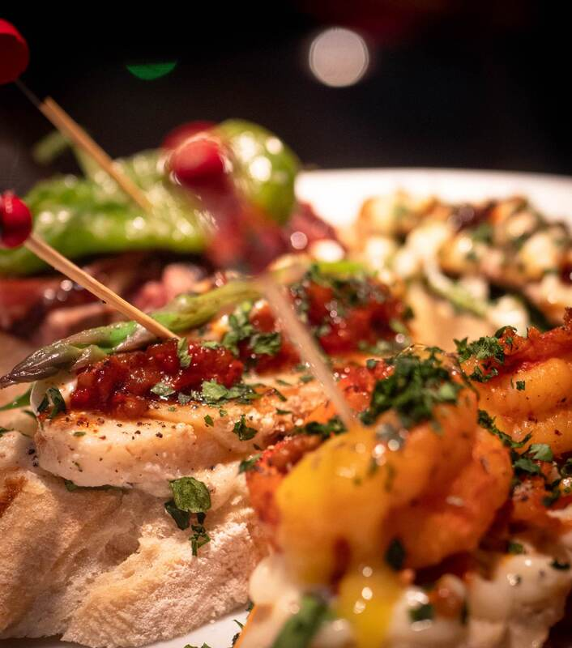
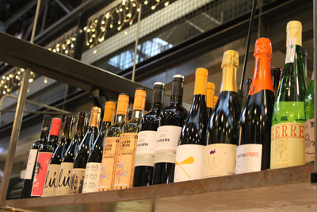

Importert fra Spania
Vin
Barramon importerer sine egne viner direkte fra Spania. Mange av disse kan du finne hos Vinmonopolet.

Egen import
Fra baskiske og spanske vinmarker
Vinutvalget hos Barramon speiler kjøkkenet: rødvin fra Priorat, Ribera del Duero, Rioja og Costers del Segre, hvitvin og txakoli fra Baskerland, cava og rosé — importert direkte fra produsentene i Spania.
Flere av flaskene finner du også på Vinmonopolet, men det fulle utvalget nyter du best på glass hos oss, sammen med et fat pintxos.